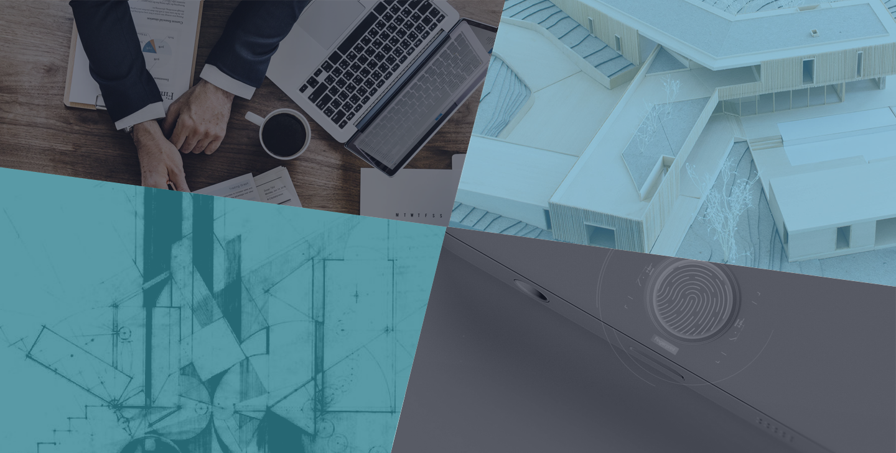

上居-未来人居预制系统
DESIGN FOR THE FUTURE


海量数据

精准定位

交叉验证

01
上居柔性开发
ELAB通过独立研发线上交互技术
获得海量、精准、真实、未来的市场数据、客户行为数据等热数据，
辅以ELAB自主的ECS产品创新原型库，完成未来人居开发。
ELAB通过独立研发线上交互技术
获得海量、精准、真实、未来的市场数据、客户行为数据等热数据，
辅以ELAB自主的ECS产品创新原型库，完成未来人居开发。



市场研究及产品定位Market Research and Product Positioning
输出概念产品方案及创新产品原型Conceptual Product Solutions &
Innovation Product Prototypes
Innovation Product Prototypes
输出概念总图及经济测算Conceptual General Plan &
Economic Calculation
Economic Calculation
线上交互热度定型Online Interaction Heat Detection
柔性开发系统解决方案
路径vs价值模式
路径vs价值模式
02
产品详情
从源头解决创新开发风险，最专业的未来人居需求探索，模块化的创新产品原型库，
最顶尖的设计师资源，帮助开发商实现规模化预制开发。
从源头解决创新开发风险，最专业的未来人居需求探索，模块化的创新产品原型库，
最顶尖的设计师资源，帮助开发商实现规模化预制开发。

CNC
未来人居实验室
专注未来人居需求探索，结合20年地产开发经验，以及自主研发的互联网交互技术，将海量、精准、真实、未来的热数据分析转化，探究未来人居的无限可能。
未来人居实验室
专注未来人居需求探索，结合20年地产开发经验，以及自主研发的互联网交互技术，将海量、精准、真实、未来的热数据分析转化，探究未来人居的无限可能。

ECS
创新产品原型库
包含最权威、最前沿、最未来的创新产品原型，基于互联网技术，将产品设计模块化，结合项目特质及客户需求，迅速转化为产品设计概念方案，提升效率。
创新产品原型库
包含最权威、最前沿、最未来的创新产品原型，基于互联网技术，将产品设计模块化，结合项目特质及客户需求，迅速转化为产品设计概念方案，提升效率。

ZHJ
著匠全球设计师
集结全球顶尖设计师资源，众智众包，共同开发未来人居产品。
著匠全球设计师
集结全球顶尖设计师资源，众智众包，共同开发未来人居产品。